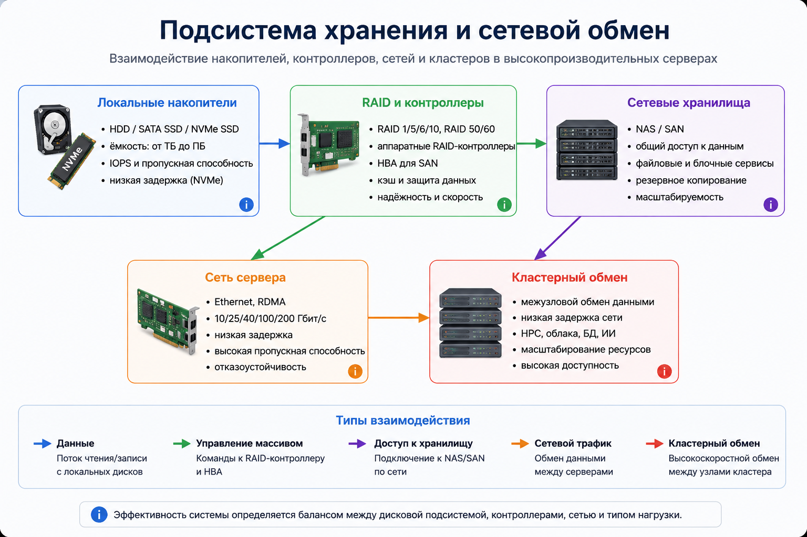

Подсистемы хранения данных и сетевого обмена
Для высокопроизводительного сервера скорость вычислений должна поддерживаться быстрым вводом-выводом: накопителями, контроллерами, сетевыми адаптерами и внешними системами хранения.

Сравнение накопителей
| Тип | Особенности | Плюсы | Типичное применение |
|---|---|---|---|
| HDD | Механический диск | Большой объём при низкой цене | Архивы, резервные копии, холодные данные |
| SATA SSD | SSD через SATA | Быстрее HDD, простая совместимость | Системные тома, умеренные нагрузки |
| SAS SSD | Серверный SSD через SAS | Надёжность, корпоративные функции | Базы данных, корпоративное хранение |
| NVMe SSD | SSD через PCIe и протокол NVMe | Высокие IOPS и низкая задержка | БД, аналитика, кэширование, ИИ |
RAID и хранение данных
RAID позволяет объединять несколько накопителей в массив для повышения скорости, отказоустойчивости или их сочетания. При выборе уровня RAID учитываются полезная ёмкость, скорость восстановления и допустимый риск потери данных.
RAID 1
Зеркалирование данных. Повышает отказоустойчивость, но уменьшает полезную ёмкость.
RAID 5/6
Использует контрольные данные. Подходит для хранения, но восстановление может быть длительным.
RAID 10
Сочетает зеркалирование и чередование. Часто применяется для высоконагруженных БД.
Сетевой обмен
В кластерах и ЦОД серверы постоянно обмениваются данными между собой. Для этого используются скоростные сетевые интерфейсы, поддержка низкой задержки и технологии прямого доступа к памяти по сети.
- Ethernet — универсальная технология локальных и дата-центровых сетей.
- RDMA — снижает задержки при обмене данными между узлами.
- InfiniBand — применяется в отдельных высокопроизводительных вычислительных кластерах.